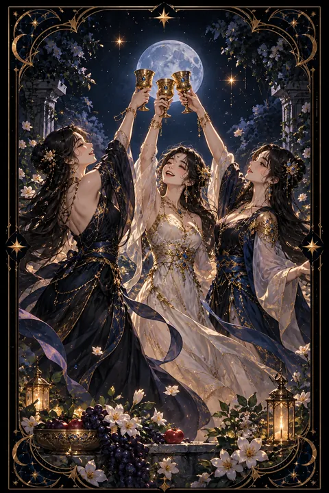

컵 3 카드 — 함께 나누는 축하와 우정
컵 3 카드 한눈에 보기
컵 3 카드 상징 읽기

동네보살의 카드 그림은 전통 라이더–웨이트 덱의 뜻을 새 그림으로 옮긴 것입니다. 아래 상징 설명은 전통 덱의 그림을 기준으로 합니다.
세 여인이 둥글게 모여 잔을 머리 위로 높이 들고 있습니다. 원을 이룬 배치는 누구도 앞서거나 뒤처지지 않는 평등한 우정과 공동체를 상징합니다. 세 사람의 옷 색깔이 저마다 다른 것은 서로 다른 개성이 어울려 하나의 조화를 이룬다는 뜻입니다.
발밑에 흩어진 호박과 포도와 꽃은 수확의 풍요를 나타냅니다. 함께 애쓴 일이 결실을 맺어 그 기쁨을 나누는 자리라는 의미이며 추수 감사의 잔치를 떠올리게 합니다.
높이 든 잔은 축배이자 감사의 표현입니다. 물의 원소인 컵은 감정을 다스리므로 이 장면은 개인의 성취보다 관계 안에서 피어나는 기쁨을 강조합니다. 세 여인이 서로 어깨를 맞대고 춤추는 모습은 기쁨이 나눌수록 커진다는 것을 보여 줍니다. 맑게 갠 하늘은 걱정 없이 열린 마음 상태를 드러냅니다.
컵 3 카드 정방향 뜻
정방향 컵 3은 좋은 사람들과 기쁨을 나누는 축하의 카드입니다. 합격, 승진, 결혼, 출산처럼 축하할 일이 생기거나 오랜만에 반가운 사람들과 모여 즐거운 시간을 보내는 흐름을 뜻합니다.
이 카드가 강조하는 것은 함께하는 힘입니다. 혼자 해낸 일처럼 보여도 곁에서 응원하고 도와준 사람들이 있었다는 것을 떠올리게 합니다. 친구, 동료, 가족과의 유대가 깊어지고 새로운 모임에서 마음 맞는 사람들을 만날 가능성도 큽니다.
축하할 일이 있다면 작게라도 자리를 만들어 사람들과 나누어 보세요. 고마운 이들에게 감사를 전하는 것만으로도 관계가 한층 두터워집니다. 동호회나 봉사 모임처럼 여럿이 함께하는 활동을 시작하기에도 좋은 때입니다. 웃음이 오가는 자리에 머무는 시간이 지친 마음을 채워 주는 가장 좋은 쉼이 됩니다.
컵 3 카드 역방향 뜻
역방향 컵 3은 즐거움이 지나쳐 균형을 잃은 모습입니다. 모임과 술자리가 잦아져 몸과 지갑이 함께 지치거나 놀이에 빠져 해야 할 일을 뒤로 미루는 상태일 수 있습니다.
인간관계에서는 뒷말과 편 가르기가 문제로 떠오르기 쉽습니다. 셋 이상이 모인 자리에서 누군가 소외되거나 험담이 오가며 신뢰가 흔들리는 흐름입니다. 연애에서는 두 사람 사이에 다른 사람이 끼어드는 삼각관계의 경고로 읽히기도 합니다.
그렇다고 사람을 모두 멀리할 필요는 없습니다. 자신을 진심으로 아끼는 사람과 그렇지 않은 사람을 가려내는 기회로 삼으면 됩니다. 무리에서 오가는 이야기에 휩쓸리지 말고 한발 떨어져 지켜보세요. 모임의 횟수를 줄이는 대신 깊이 있는 만남을 늘리면 관계의 질이 훨씬 좋아집니다.
연애에서 컵 3 카드
솔로라면 여럿이 모이는 자리에서 인연이 싹트기 쉬운 시기입니다. 친구의 소개, 동호회, 지인의 결혼식처럼 사람들이 어울리는 자리에 적극적으로 참여해 보세요. 밝고 편안한 자리에서 호감이 저절로 싹트곤 합니다.
연애 중이라면 두 사람의 관계를 주변에 알리고 축하받는 흐름이 보입니다. 서로의 친구들과 함께 어울리는 시간이 관계를 더 튼튼하게 만들어 줍니다. 기념일을 가볍게 챙기며 함께 웃는 시간을 늘려 보세요.
역방향이라면 관계에 제삼자가 끼어들 가능성을 경계해야 합니다. 의심을 키우기보다 불편한 점을 솔직하게 이야기하고 두 사람만의 시간을 따로 확보하는 것이 좋습니다. 둘만의 추억을 새로 만드는 작은 나들이가 관계에 활기를 더해 줍니다. 함께 웃은 기억이 쌓일수록 관계도 단단해집니다.
재회·속마음 질문에서 컵 3 카드
재회를 묻는 자리에서 컵 3이 나오면 공통의 친구나 모임을 통해 다시 마주칠 가능성이 있다는 뜻입니다. 둘만의 무거운 만남보다 여럿이 함께하는 가벼운 자리에서 자연스럽게 인사를 나누는 편이 흐름에 맞습니다. 옛 추억을 웃으며 이야기할 수 있다면 관계가 다시 이어질 여지도 생깁니다. 역방향이라면 주변 사람들의 말이 두 사람 사이를 흔들 수 있으니 소문보다 상대의 직접적인 말과 행동을 기준으로 판단하세요. 오랜만에 만난 자리에서는 지난 일을 따지기보다 안부와 근황을 편하게 나누는 것이 좋습니다. 가벼운 웃음이 다시 연락을 이어 가는 다리가 되어 줍니다.
일·금전에서 컵 3 카드
일에서는 팀이 함께 이룬 성과를 축하하는 카드입니다. 프로젝트 마무리, 목표 달성, 새 동료의 합류처럼 조직 안에 좋은 기운이 도는 시기입니다. 협업과 네트워킹이 특히 잘 풀리니 행사나 모임에서 만난 인연이 기회로 이어지기도 합니다.
금전 면에서는 여럿이 함께하는 일에서 이익이 돌아오는 흐름입니다. 다만 회식과 모임 비용이 늘기 쉬우니 지출 한도를 미리 정해 두세요. 역방향이라면 사내 뒷말에 휘말리지 않도록 말을 아끼는 것이 좋습니다. 동료의 성과를 먼저 축하해 주는 태도가 팀 안에서 신뢰를 쌓아 줍니다. 좋은 분위기가 곧 다음 성과의 바탕이 됩니다. 팀 안의 작은 축하 자리가 다음 협업의 속도를 끌어올려 줍니다.
컵 3 카드는 예일까 아니오일까
세 사람이 잔을 들어 축배를 나누는 카드여서 기쁜 결과와 주변의 응원을 기대할 수 있는 긍정의 답입니다. 역방향이라면 흥에 들떠 판단이 흐려질 수 있으니 절제가 더해져야 좋은 결과로 이어집니다.
자주 묻는 질문
컵 3 카드 역방향은 나쁜 뜻인가요?
역방향 컵 3은 즐거움이 지나쳐 균형을 잃은 모습입니다. 모임과 술자리가 잦아져 몸과 지갑이 함께 지치거나 놀이에 빠져 해야 할 일을 뒤로 미루는 상태일 수 있습니다.
컵 3 카드가 연애 질문에 나오면요?
솔로라면 여럿이 모이는 자리에서 인연이 싹트기 쉬운 시기입니다. 친구의 소개, 동호회, 지인의 결혼식처럼 사람들이 어울리는 자리에 적극적으로 참여해 보세요. 밝고 편안한 자리에서 호감이 저절로 싹트곤 합니다.
타로 카드는 어떻게 뽑나요?
타로 카드 페이지에서 78장을 섞으면 그중 22장이 펼쳐집니다. 마음이 가는 세 장을 고르면 과거·현재·미래 자리에 놓이고, 한 장씩 뒤집어 자리와 방향에 맞는 풀이를 읽습니다. 정방향과 역방향은 섞는 순간 정해집니다.